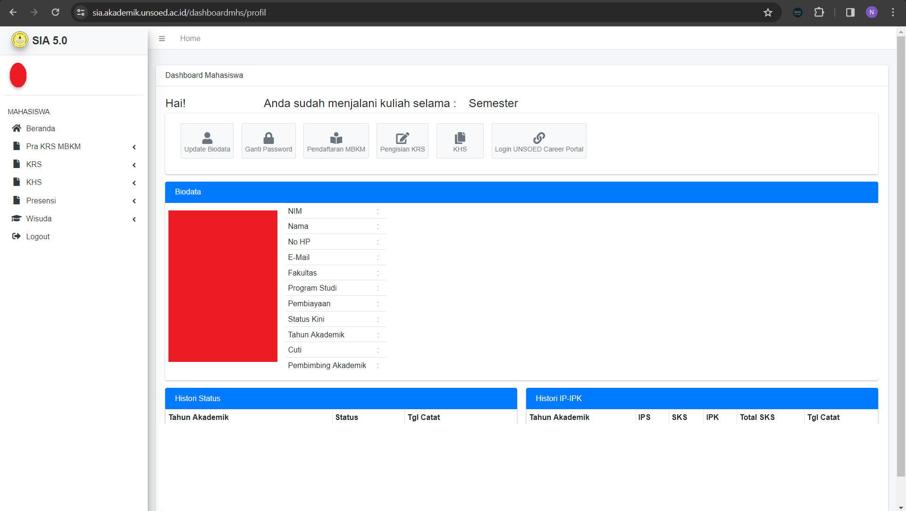
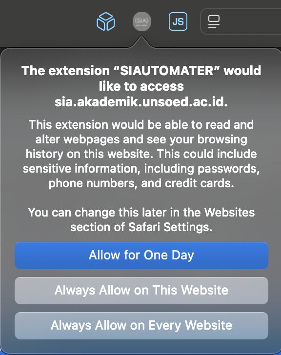

Tutorial Penggunaan
-
Buka laman
Sia 5.0
-
Klik login dan lakukan login menggunakan akun kamu
-
Jika berhasil maka kamu akan diarahkan ke halaman dashboard

-
Klik extension SIAutomater yang sudah di install

-
Isi keterangan yang dibutuhkan pada extension
-
Klik tombol "run"
- Tunggu hingga proses selesai